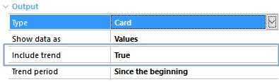
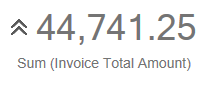

Include Trend Property it's a QueryViewer control and a Query object property. It's only available when the Type property in QueryViewer control has the Card value assigned and allows indicating the trending of the returned data. Values
DescriptionIf the Query object includes a Date or DateTime attribute, trending can be indicated by setting the Include Trend Property in True:  This it's calculated with the least squares method by adjusting a straight line to the Data of a defined period and calculating the slope of the curve (positive, negative or zero) and representing it with an arrow to the left of the value:  AvailabilityThis property's available as of GeneXus 15. See also |
| Backlinks | ||
| Dashboard Card Include trend property | Include Max and Min Property | Include Sparkline Property |
| Orientation Property | Query Card Type | Trend period property |